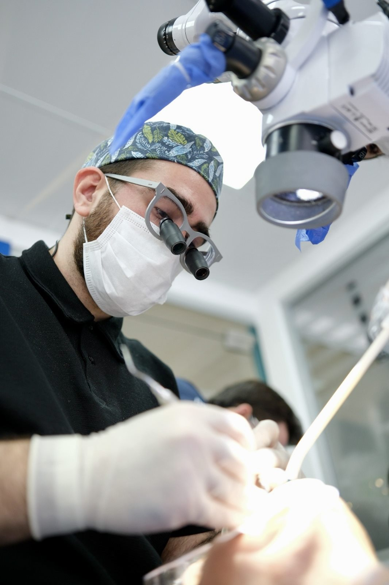
Estetik ve dijital diş hekimliği
Gülüş Tasarımı · Çene Eklem Bozuklukları · Horlama Protezi
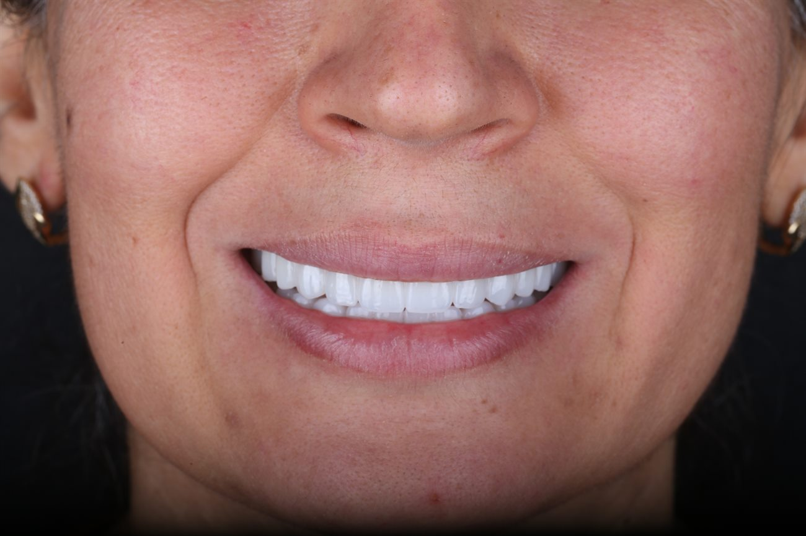
Her tedavi, ayrıntılı bir muayene ve kapsamlı değerlendirme ile başlar. Dijital planlama, büyütme altında hassas çalışma ve diş laboratuvarıyla yakın iş birliği, tedavi sürecimizin temel unsurlarını oluşturur.
Estetik beklentilerin yanı sıra çiğneme fonksiyonu, çene ekleminin sağlığı ve uzun dönemli ağız sağlığı da bütüncül bir yaklaşımla değerlendirilir.
Randevu AlAşağıdaki konularda muayene ve tedavi yapılır. Ayrıntılar için randevu oluşturabilirsiniz.
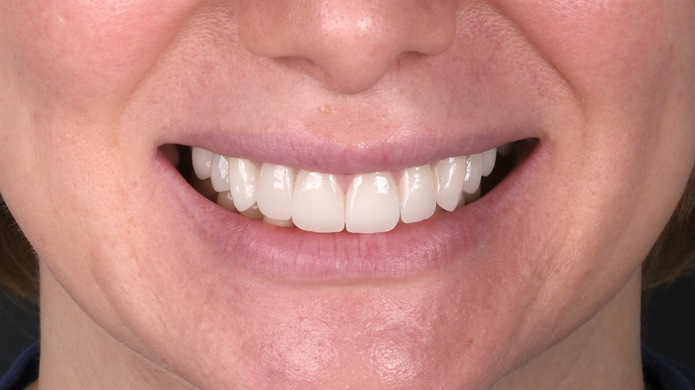
Dişlerin şekli, boyutu ve dizilimi kişiye özel olarak dijital ortamda planlanır. Tedavi süreci, istekleriniz ve mevcut ağız durumu dikkate alınarak birlikte yürütülür.
Randevu alEksik dişlerin tedavisinde implant uygulamaları, ayrıntılı muayene ve dijital planlama ile gerçekleştirilir. Tedavi süreci, klinik değerlendirme sonuçlarına göre kişiye özel olarak planlanır.
Randevu al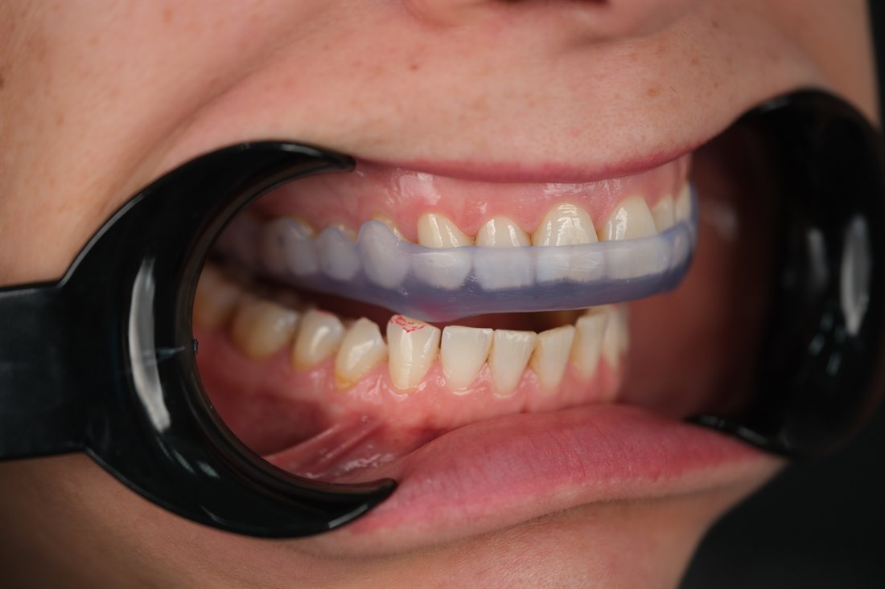
Çene ekleminde ağrı, ses, kilitlenme ve diş sıkma gibi şikayetler ayrıntılı olarak değerlendirilir. Tedavi, hastalığın türüne ve şikayetlerin şiddetine göre planlanır. Uygun vakalarda eklem splintleri (gece plağı) ve koruyucu yaklaşımlar tercih edilir.
Randevu al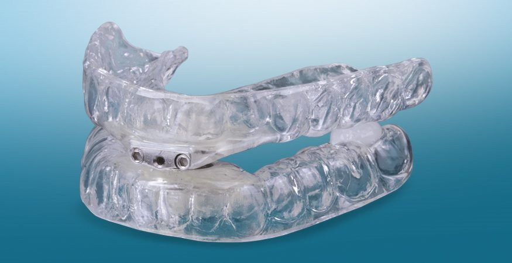
Horlama ve bazı hafif uyku apnesi vakalarında, uyku sırasında kullanılan kişiye özel ağız içi apareyler hazırlanır. Bu apareyler alt çenenin pozisyonunu düzenleyerek hava yolunun açık kalmasına yardımcı olur. Tedaviye uygunluk, muayene ve gerekli değerlendirmeler sonrasında belirlenir.
Randevu alKubilay Barış Çiçek lisans eğitimini 2017 yılında Erciyes Üniversitesi Diş Hekimliği Fakültesinde tamamladı. 2018 yılında Diş Hekimliğinde Uzmanlık Sınavını kazanarak Cumhuriyet Üniversitesi Diş Hekimliği Fakültesi’nde uzmanlık eğitimine başladı. “Temporomandibular eklem bölgesinde ağrı şikayeti olan hastaların non-invaziv ve minimal invaziv tedavi yöntemleri açısından retrospektif olarak değerlendirilmesi” konulu tez sunumuyla Protetik Diş Tedavisi Uzmanı unvanını aldı. 2024 yılından itibaren Bezmialem Vakıf Üniversitesi Diş Hekimliği Fakültesi Protetik Diş Tedavisi Anabilim Dalı’nda akademik ve klinik çalışmalarını sürdürmektedir.
Dr. Çiçek; Türk Diş Hekimleri Birliği (TDB), International Team for Implantology (ITI) ve European Association for Osseointegration (EAO) derneklerinin aktif üyesi olup Bursa ITI Study Club co-direktörü olarak görev yapmaktadır.
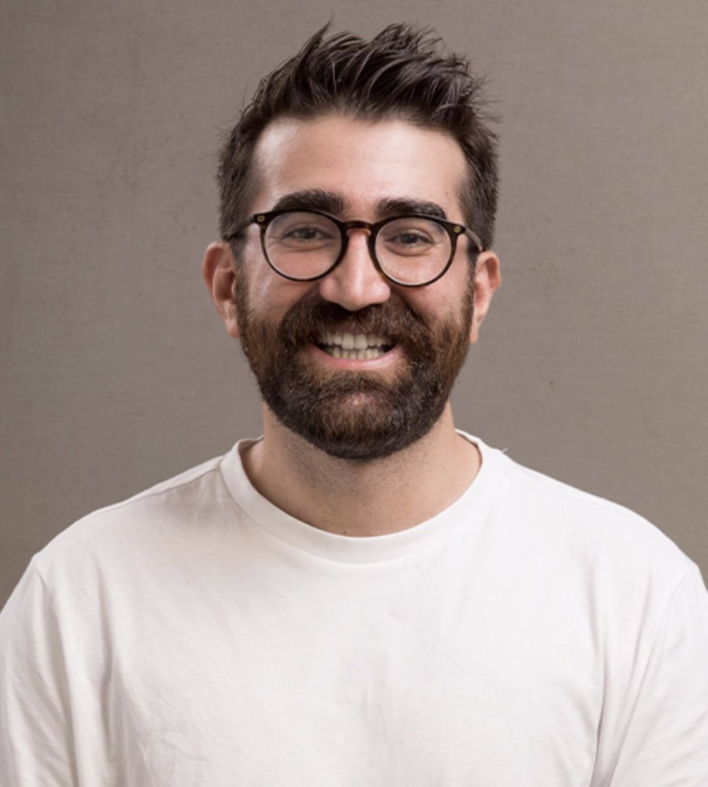
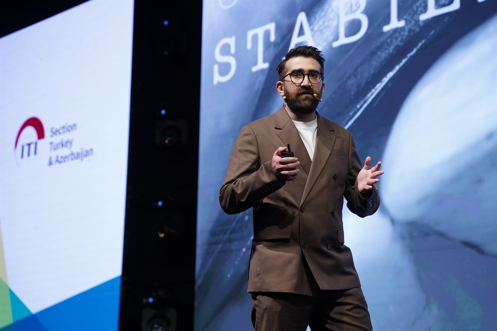
Kapsamlı anamnez alınarak; estetik, dental, periodontal yapılar ve çene eklemini (stomatognatik sistem) içine alan detaylı klinik muayene gerçekleştirilir.
Gerekli radyografik incelemeler ve dijital ölçüler alınarak mevcut klinik durum kayıt altına alınır.
Tedavi seçenekleri ve süreç sizinle birlikte değerlendirilip karara bağlanır.
Yapılacak işlemler dijital ortamda tasarlanır ve tedavi hedefleri netleştirilir.
Belirlenen tedavi planı, güncel klinik protokollere uygun olarak gerçekleştirilir.
Uygulanan tedavinin estetik, biyomekanik, okluzyon ve çevre dokularla fonksiyonel ilişkileri değerlendirilir.
Düzenli kontroller ve bakım önerileriyle tedavinin uzun dönem takibi yapılır.
Her aşamada bilgilendirme yapılır.
Teorik ve Uygulamalı Oturumlar: Estetik ve dijital diş hekimliğindeki güncel yaklaşımların ele alındığı, kanıta dayalı ve interaktif (hands-on) klinik eğitimler.
İletişim ve Planlama: Eğitim talepleri, çalışma grupları ve takvim detayları için iletişime geçebilirsiniz.
İletişime geç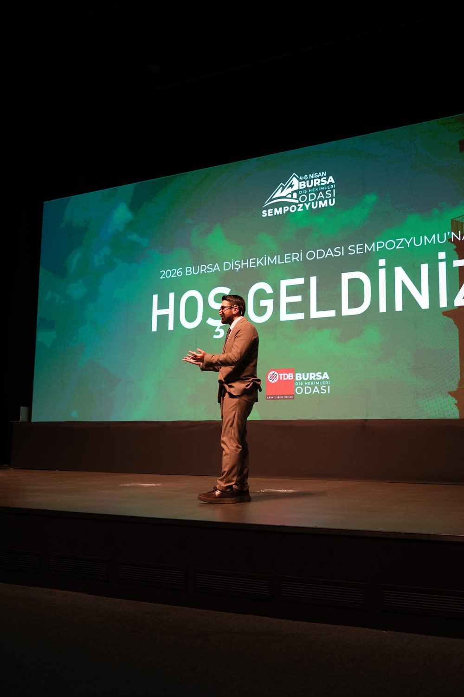
Klinik ortamı ve çalışma sürecinden kareler.
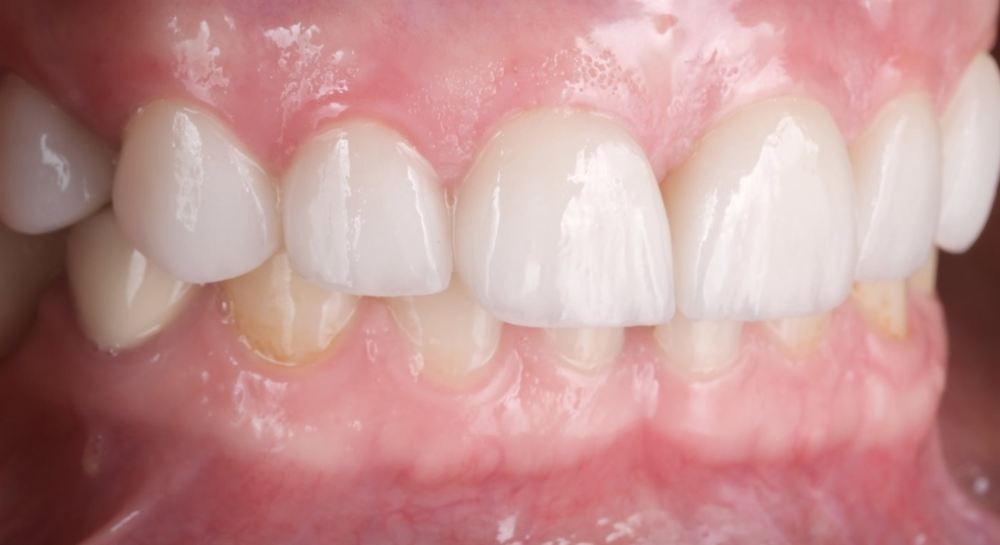
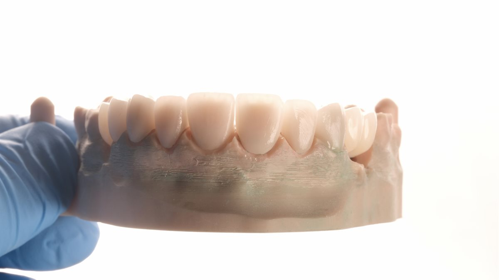
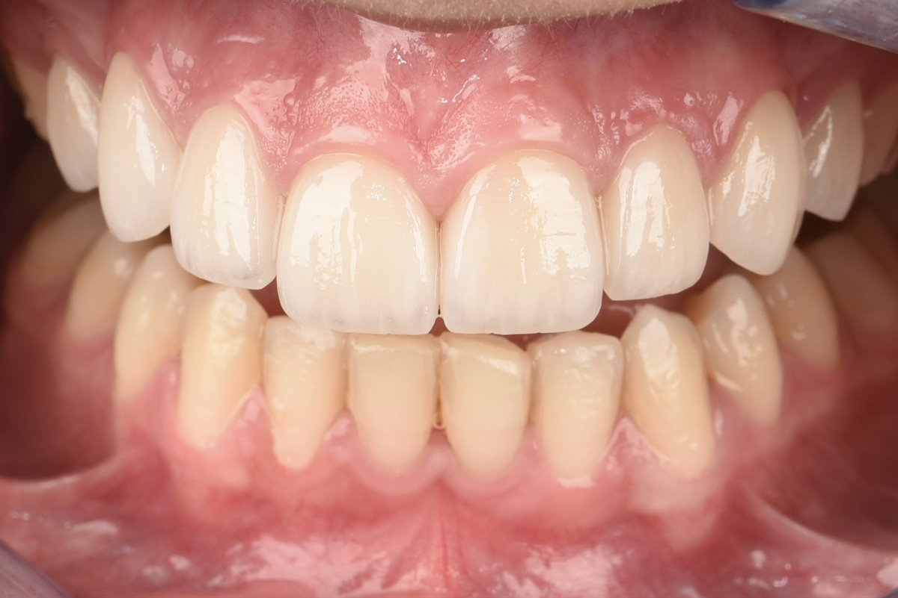
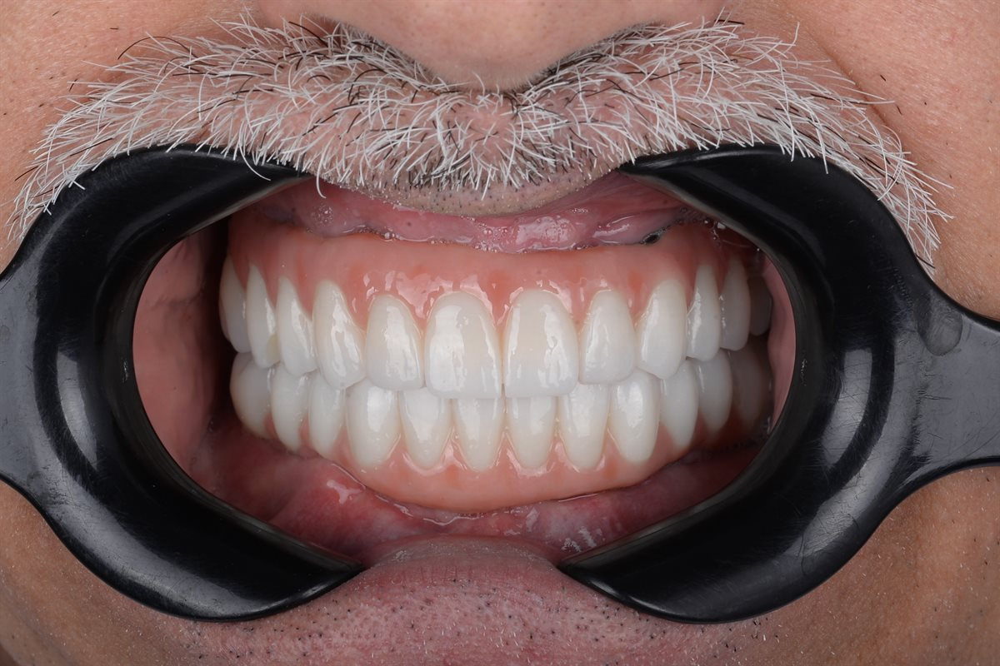
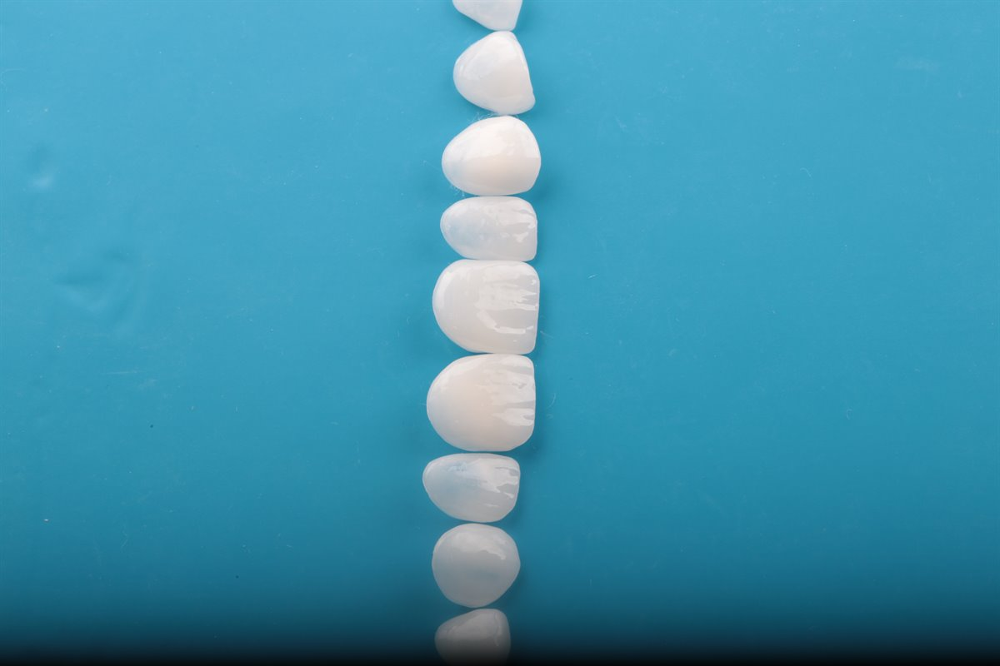
Daha fazla vaka için Instagram'da @dr_kubikbc
Dişlerin biçim, renk ve diziliminin; yüz hatları ve kişinin beklentileri göz önünde bulundurularak dijital ortamda planlanmasıdır. Uygulama öncesinde plan birlikte değerlendirilir.
Çene ekleminde ağrı, açıp kapama sırasında ses, kilitlenme, diş sıkma veya gıcırdatma ve baş-boyun bölgesinde gerginlik görülebilir. Kesin değerlendirme hekim muayenesi ile yapılır.
Ağız içine takılan, alt çeneyi hafifçe önde konumlandırarak hava yolunu açık tutmaya yardımcı olan apareylerdir. Basit horlama ve hafif uyku apnesinde kullanılabilir; uygunluk muayene ve gerektiğinde uyku testi ile belirlenir.
Çoğunlukla uykuda görülen diş sıkma ve gıcırdatma; diş aşınması, çene ağrısı ve baş ağrısına yol açabilir. Muayene sonrası, gece plağı gibi koruyucu yaklaşımlar değerlendirilebilir.
Şikâyetlerin dinlenmesi, ağız içi inceleme ve gerektiğinde görüntüleme ile mevcut durum değerlendirilir; uygun seçenekler hakkında bilgi verilir.
Randevu ve sorularınız için WhatsApp veya telefon ile ulaşabilirsiniz.
Bilgilerinizi bırakın, size dönüş yapılsın.